Teil 2 · Didaktik 2.2 · Generation 534411b8fa941f9a

Im Geschichtsviertel blickst du in die frühere Schmiedezeit. Gilda zeigt, wie sich der Fehler bei einer Änderung entwickeln würde; Olli verändert die Parameter in Gegenrichtung. Vali prüft unbekannte Daten getrennt vom Training. Viele gelernte Muster stecken verteilt in den Stellschrauben. Es gibt kein einzelnes Fach mit der fertigen Mondschiff-Antwort. Beim späteren Antworten bleiben die Gewichte eingefroren. Der Stempelamt-Schreiber zeigt zugleich, dass die Anwendung Text aufbewahren kann.
Berechne Loss, Gradient und Optimierungsschritt im angegebenen Lehrmodell. Halte Trainingsdaten und Validierungsdaten getrennt und untersuche Generalisierung sowie Nebenwirkungen eines Eingriffs.
Der Gradient beschreibt die Richtung steigenden Fehlers; der Optimierer nutzt eine Gegenrichtung mit gewählter Schrittweite. Guter Trainings-Loss beweist noch keine gute Leistung auf neuen Daten. Präferenztraining und spätere Nutzung sind unterschiedliche Phasen. Die aktuelle Dokumentation macht Rechen- und Energiekosten sichtbar.
Prüfe neue Beispiele und getrennte Daten. Suche keine einzelne Antwortschublade im Modell. Ergänze bei „lernt nicht beim Reden“ immer den Mitschreiber-Nachsatz; Geheimnisse, Adressen und Passwörter bleiben bei dir.